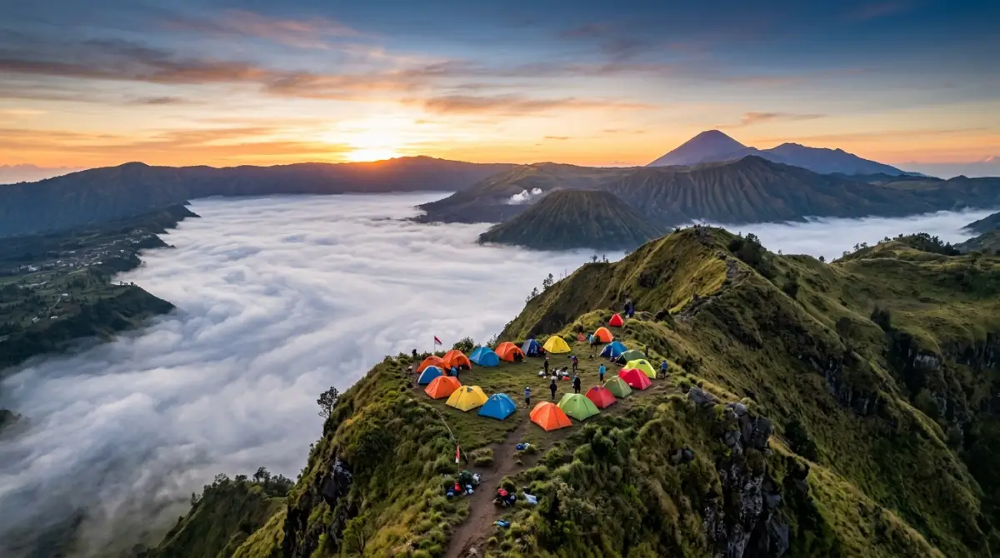
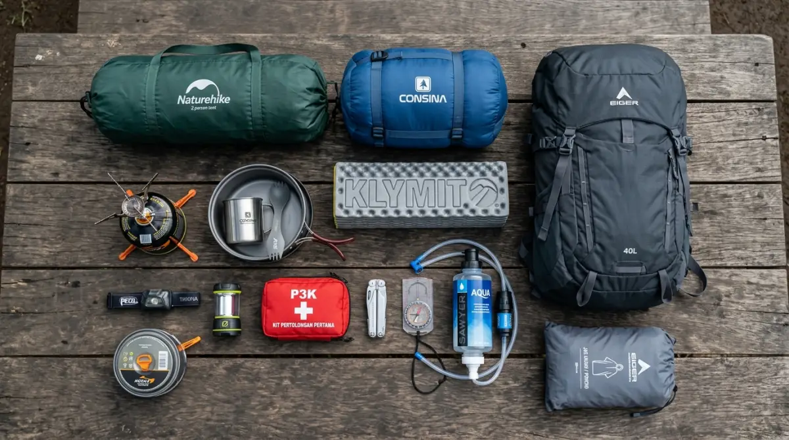

Lokasi wisata camping terbaik di Indonesia — destinasi impian para pecinta alam terbuka.Wisata camping adalah kegiatan berkemah di alam terbuka yang menggabungkan petualangan, relaksasi, dan kedekatan dengan alam sebagai pengalaman wisata utama.
- Apa Itu Wisata Camping dan Mengapa Semakin Populer?
- Jenis-Jenis Wisata Camping yang Perlu Diketahui
- Apa Saja Perlengkapan Wajib Wisata Camping?
- Bagaimana Cara Memilih Lokasi Wisata Camping yang Tepat?
- Bagaimana Merencanakan Wisata Camping yang Aman?
- Apa Saja Kesalahan Umum dalam Wisata Camping?
- Apa Manfaat Wisata Camping bagi Kesehatan?
- Etika Camping dan Prinsip Leave No Trace
- FAQ Wisata Camping
Apa Itu Wisata Camping dan Mengapa Semakin Populer?
Wisata camping adalah aktivitas menginap di alam terbuka menggunakan tenda atau shelter sederhana, menjauhi fasilitas urban demi pengalaman autentik bersama alam.
Menurut laporan Outdoor Foundation 2023, lebih dari 57 juta orang di Asia Tenggara melakukan kegiatan berkemah setidaknya sekali per tahun, dengan pertumbuhan peserta baru mencapai 18 persen dibanding periode 2019-2021. Di Indonesia, tren wisata camping tumbuh signifikan pasca-pandemi, didorong oleh meningkatnya kesadaran akan pentingnya kesehatan mental dan kebutuhan rekreasi alam terbuka.
Popularitas wisata camping didorong oleh beberapa faktor:
- Biaya relatif terjangkau dibandingkan wisata hotel atau resort
- Fleksibilitas tinggi dalam memilih lokasi dan durasi perjalanan
- Manfaat kesehatan fisik dan mental yang terbukti dari paparan alam terbuka
- Komunitas camping yang aktif dan mendukung di seluruh Indonesia
- Kemudahan akses informasi melalui media sosial dan platform wisata digital
Jenis-Jenis Wisata Camping yang Perlu Diketahui
Ada beberapa jenis wisata camping yang perlu diketahui sebelum memilih perjalanan, masing-masing dengan karakteristik, tingkat kesulitan, dan kebutuhan perlengkapan berbeda.
Camping Keluarga (Family Camping)
Camping keluarga dirancang untuk kelompok yang mengutamakan kenyamanan, biasanya di campsite resmi dengan fasilitas seperti toilet umum, sumber air bersih, dan area bermain. Jenis ini ideal untuk pemula dan anak-anak.
Backpacking Camping
Backpacker camping melibatkan perjalanan jarak jauh dengan membawa semua perlengkapan di punggung. Biasanya menuju lokasi terpencil seperti puncak gunung atau lembah tersembunyi. Membutuhkan fisik lebih kuat dan perlengkapan yang lebih ringan namun komprehensif.
Glamping (Glamorous Camping)
Glamping menggabungkan kenyamanan akomodasi premium dengan suasana alam. Fasilitas biasanya sudah tersedia di lokasi, termasuk tempat tidur, listrik, dan kamar mandi. Cocok untuk mereka yang ingin merasakan alam tanpa melepas kenyamanan.
Survival Camping
Jenis camping paling menantang ini mengutamakan keterampilan bertahan hidup di alam liar dengan perlengkapan minimal. Tidak direkomendasikan untuk pemula tanpa pendampingan instruktur berpengalaman.
Apa Saja Perlengkapan Wajib Wisata Camping?
Perlengkapan wisata camping yang wajib dibawa meliputi tenda, sleeping bag, matras, sumber cahaya, alat masak portable, dan pakaian berlapis sesuai kondisi cuaca lokasi tujuan.
Perlengkapan Tidur dan Shelter
- Tenda: Pilih berdasarkan kapasitas dan ketahanan terhadap cuaca. Untuk gunung, pilih tenda dome 3-4 musim. Untuk pantai, tenda tunnel lebih stabil menghadapi angin.
- Sleeping bag: Sesuaikan dengan suhu minimum lokasi camping. Di gunung dengan suhu 10 derajat Celsius, gunakan sleeping bag berrating minimal 5 derajat Celsius.
- Matras atau sleeping pad: Memberikan isolasi dari tanah dingin dan kenyamanan tidur.
Perlengkapan Memasak dan Makan
- Kompor portable dengan bahan bakar yang cukup
- Panci, wajan, dan peralatan makan ringan berbahan titanium atau aluminium
- Botol air minum dengan kapasitas memadai
- Filter air atau tablet purifikasi untuk sumber air di alam
Perlengkapan Navigasi dan Keselamatan
- Peta topografi dan kompas (jangan bergantung penuh pada GPS)
- Headlamp dengan baterai cadangan
- Kotak P3K lengkap sesuai kondisi lokasi
- Peluit darurat dan cermin sinyal
- Jas hujan dan lapisan pakaian hangat
Perlengkapan Tambahan yang Sering Diabaikan
- Tali paracord serbaguna
- Galon atau dry bag untuk melindungi barang dari hujan
- Sunscreen dan insect repellent
- Kamera atau smartphone dalam wadah tahan air

Perlengkapan wisata camping lengkap yang wajib dibawa saat berkemah di alam terbuka.Bagaimana Cara Memilih Lokasi Wisata Camping yang Tepat?
Lokasi wisata camping yang tepat dipilih berdasarkan tingkat pengalaman, ketersediaan fasilitas, kondisi cuaca musiman, dan akses transportasi yang aman ke titik camping.
Indonesia memiliki ratusan lokasi camping yang layak dikunjungi. Berikut kategori lokasi berdasarkan profil camper:
Untuk Pemula
- Ranca Upas, Bandung: Campsite resmi dengan fasilitas lengkap, suhu sejuk, dan akses mudah dari kota
- Wana Wisata Coban Rondo, Malang: Area camping di sekitar air terjun dengan pengelolaan terstruktur
- Pantai Nglambor, Gunungkidul: Camping tepi pantai dengan pemandangan karang eksotis
Untuk Tingkat Menengah
- Gunung Papandayan, Garut: Trek menantang dengan hamparan edelweiss dan kawah aktif
- Danau Segara Anak, Lombok: Camping di tepi danau kaldera Gunung Rinjani
- Gunung Merbabu, Jawa Tengah: Padang savana luas dengan panorama puncak yang memukau
Untuk Camper Berpengalaman
- Puncak Carstensz, Papua: Salah satu pendakian paling menantang di Asia Tenggara
- Gunung Semeru, Jawa Timur: Pendakian ikonik dengan Ranu Kumbolo sebagai camping spot legendaris
Bagaimana Merencanakan Wisata Camping yang Aman?
Wisata camping yang aman direncanakan dengan riset lokasi, pemeriksaan cuaca, perizinan resmi, pemberitahuan kontak darurat, dan persiapan fisik minimal dua minggu sebelum keberangkatan.
Langkah Perencanaan Wisata Camping
- Tentukan lokasi dan tanggal: Sesuaikan dengan musim dan kemampuan fisik kelompok
- Urus perizinan: Beberapa lokasi seperti kawasan taman nasional memerlukan izin resmi dari BKSDA atau pengelola
- Pantau prakiraan cuaca: Gunakan aplikasi cuaca dengan data hiperlokal minimal 7 hari sebelum keberangkatan
- Informasikan rencana perjalanan: Tinggalkan itinerary lengkap kepada keluarga atau kontak darurat
- Lakukan pemeriksaan perlengkapan: Pastikan tenda tidak bocor, kompor berfungsi, dan P3K lengkap
- Latihan fisik ringan: Jalan kaki 30-45 menit per hari selama dua minggu sebelum pendakian berat
"Wisata camping yang berhasil bukan soal lokasi terindah atau perlengkapan termahal, melainkan soal perencanaan yang matang dan etika yang baik terhadap alam."
— Prinsip Camper BijakApa Saja Kesalahan Umum dalam Wisata Camping?
Kesalahan paling umum dalam wisata camping adalah membawa perlengkapan berlebihan, mengabaikan prakiraan cuaca, tidak membawa P3K, dan meninggalkan sampah di lokasi berkemah.
Kesalahan lain yang sering terjadi:
- Overloading carrier: Beban ideal carrier maksimal 30 persen berat tubuh
- Mendirikan tenda di jalur aliran air: Berbahaya saat hujan deras tiba-tiba
- Tidak memberi tahu orang lain: Tanpa informasi rencana perjalanan, evakuasi darurat menjadi lebih sulit
- Memasak di dalam tenda: Risiko kebakaran dan keracunan karbon monoksida sangat tinggi
- Mengabaikan Leave No Trace: Sampah dan kerusakan alam mengurangi kualitas camping untuk semua orang
Apa Manfaat Wisata Camping bagi Kesehatan?
Wisata camping memberikan manfaat kesehatan fisik dan mental yang signifikan, termasuk pengurangan stres, peningkatan kualitas tidur, dan penguatan sistem imun melalui paparan udara segar dan aktivitas fisik.
Penelitian dari University of Michigan (2022) menunjukkan bahwa menghabiskan minimal 120 menit per minggu di alam terbuka berkorelasi dengan peningkatan kesejahteraan mental yang signifikan. Paparan cahaya matahari alami selama camping juga membantu memperbaiki ritme sirkadian dan meningkatkan produksi vitamin D.
Manfaat spesifik wisata camping meliputi:
- Pengurangan kadar kortisol (hormon stres) hingga 16 persen setelah dua hari berkemah
- Peningkatan kualitas tidur akibat ritme cahaya alami
- Penguatan otot kaki, punggung, dan inti melalui trekking
- Peningkatan kemampuan problem-solving dan resiliensi mental
Etika Camping dan Prinsip Leave No Trace
Etika camping yang baik mengikuti prinsip Leave No Trace: tidak meninggalkan sampah, tidak merusak vegetasi, menjaga kebisingan, dan menghormati satwa liar serta sesama camper.
Tujuh prinsip Leave No Trace yang wajib dipahami setiap camper:
- Rencanakan perjalanan dengan matang
- Berkemah di permukaan yang tahan lama
- Kelola sampah dengan bijak — bawa pulang semua sampah
- Jangan mengambil atau merusak apapun dari alam
- Minimalkan dampak api unggun
- Hormati satwa liar — jangan memberi makan hewan liar
- Hormati camper lain dan pengguna alam
Wisata camping adalah pengalaman yang dapat dinikmati siapa saja dengan persiapan yang tepat. Mulailah dari lokasi mudah dengan fasilitas tersedia, investasikan pada perlengkapan berkualitas sejak awal, dan selalu utamakan keselamatan serta etika alam.
Tiga langkah memulai wisata camping:
- Pilih lokasi campsite resmi yang sesuai kemampuan
- Lengkapi perlengkapan dasar dan pelajari cara penggunaannya
- Bergabung dengan komunitas camping lokal untuk belajar dari pengalaman nyata
FAQ — Wisata Camping